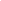

Shor's 9-Qubit Code
1. Overview & Problem Definition
Shor's 9-Qubit Code was the first quantum error correction code capable of protecting a quantum state against arbitrary single-qubit errors.
In classical systems, errors are strictly bit-flips (0 flipping to 1). Quantum systems are vastly more fragile. A qubit can suffer a bit-flip (Pauli-\(X\)), a phase-flip (Pauli-\(Z\)), or a simultaneous bit-and-phase flip (Pauli-\(Y\)). Because measuring a quantum state destroys its superposition, and the No-Cloning Theorem prevents us from simply backing up the data, protecting quantum information requires distributing it across highly entangled states.
Classical Code
Uses simple majority voting for bit errors.
Quantum Overhead
Requires 9 physical data qubits to protect 1 logical qubit.
Fault Tolerance
Corrects any single qubit bit-flip, phase-flip, or both simultaneously.
2. Intuition
Shor's Code is essentially a concatenated code. It brilliantly nests the 3-qubit bit-flip code inside the 3-qubit phase-flip code.
- The Phase Layer: First, the single logical qubit is encoded into three physical qubits using a phase-flip code. This protects the overall phase of the system by creating a superposition of \(|+\rangle\) and \(|-\rangle\) states.
- The Bit Layer: However, those three qubits are still vulnerable to bit-flips. So, Shor took each of those three qubits and encoded them again into their own 3-qubit bit-flip codes.
- The Result: You end up with three blocks of three qubits. If a bit-flip happens, the parity checks inside the specific 3-qubit block catch it and fix it. If a phase-flip happens, the parity checks across the three distinct blocks catch it and fix it. Because any arbitrary quantum error is just a linear combination of bit and phase flips, this nested architecture can correct any single-qubit error in the universe.
3. Required Gates & Circuit Schematic
- Controlled-NOT (\(CX\)): Used to spread the initial state across the auxiliary qubits, establishing the necessary entanglement for the bit-flip and phase-flip blocks.
- Hadamard (\(H\)): Used on the outer layer of the blocks to swap the computational basis (where bit-flips happen) with the phase basis (where phase-flips happen).
- Syndrome Measurement: Requires additional ancilla qubits (not shown in the simplified encoding diagram below) to measure parity without collapsing the data.

4. Mathematical Proof & State Evolution
Step 1: The Logical Basis States
By nesting the codes, the logical zero \(|0_L\rangle\) and logical one \(|1_L\rangle\) states become highly entangled 9-qubit GHZ-like states. A logical \(|0\rangle\) is encoded as three blocks of \((|000\rangle + |111\rangle)\), and a logical \(|1\rangle\) is encoded as three blocks of \((|000\rangle - |111\rangle)\):
\(|0_L\rangle = \frac{1}{2\sqrt{2}} (|000\rangle + |111\rangle) \otimes (|000\rangle + |111\rangle) \otimes (|000\rangle + |111\rangle)\)
\(|1_L\rangle = \frac{1}{2\sqrt{2}} (|000\rangle - |111\rangle) \otimes (|000\rangle - |111\rangle) \otimes (|000\rangle - |111\rangle)\)
Step 2: Encoding an Arbitrary State
We want to protect an arbitrary state \(|\psi\rangle = \alpha|0\rangle + \beta|1\rangle\). Passing this through the encoding circuit yields the protected logical state:
\(|\psi_{encoded}\rangle = \alpha|0_L\rangle + \beta|1_L\rangle\)
Step 3: Error Injection & Digitisation
Assume a completely arbitrary, continuous error \(E\) occurs on the first qubit. Any single-qubit operator can be expressed as a linear combination of the Pauli matrices (\(I, X, Y, Z\)):
\(E = c_1 I + c_2 X + c_3 Y + c_4 Z\)
When the environment applies \(E\) to the first qubit, the state becomes a superposition of "No Error", "Bit-Flip", "Bit-and-Phase-Flip", and "Phase-Flip".
Step 4: Syndrome Measurement and Collapse
We measure the error syndromes using non-destructive ancilla qubits.
- We measure the \(Z\)-parity (bit-flips) within each 3-qubit block.
- We measure the \(X\)-parity (phase-flips) across the three blocks.
Because quantum measurement forces a state to collapse into an eigenstate of the measurement operator, measuring the syndrome forces the continuous, arbitrary error \(E\) to snap into exactly one of the discrete Pauli errors (\(X, Y,\) or \(Z\)).
If the syndrome reads a phase-flip on Block 1 and a bit-flip on Qubit 1, the system has collapsed perfectly into a \(Y\) error on Qubit 1. We then apply the corresponding Pauli gate (\(Y_1\)) to the physical qubit to perfectly restore \(|\psi_{encoded}\rangle\).
5. Interactive Visualisation
- Error Discretisation (Bloch Sphere): An interactive module where a user applies a continuous, arbitrary rotation (e.g., \(R_x(\pi/4)\)) to a single physical qubit. During the "Syndrome Measurement" animation, the continuous error probabilistically snaps into either a full \(X\) flip or reverts to the identity \(I\), visually demonstrating how QEC digitises continuous quantum noise.
- Amplitude Histogram: Displays the massive 512-state (\(2^9\)) Hilbert space. The encoded state occupies only 8 specific amplitude bars. When an error occurs, the bars shift to a new, orthogonal subspace. The correction step instantly translates the bars back to the original 8 positions.
6. Python Code Implementation
import numpy as np
def simulate_shor_9qubit_logical_zero():
"""
Simulates the mathematical construction of the logical |0_L> state in NumPy.
"""
# Define basis states |000> and |111>
state_000 = np.zeros(8)
state_000[0] = 1.0
state_111 = np.zeros(8)
state_111[7] = 1.0
# Construct a single phase block: (|000> + |111>) / sqrt(2)
block_plus = (state_000 + state_111) / np.sqrt(2)
# Tensor the three blocks together to create the 9-qubit state
# |0_L> = block_plus (x) block_plus (x) block_plus
block_1_2 = np.kron(block_plus, block_plus)
logical_zero = np.kron(block_1_2, block_plus)
return logical_zero
logical_state = simulate_shor_9qubit_logical_zero()
# The resulting state vector has length 512 (2^9).
print(f"State vector dimension: {len(logical_state)}")
print(f"Number of non-zero amplitudes: {np.count_nonzero(logical_state)}")
from qiskit import QuantumCircuit
def shor_9qubit_encoding():
# 9 data qubits
qc = QuantumCircuit(9)
# Assume arbitrary state preparation on Q0
# qc.rx(np.pi/3, 0)
# --- PHASE ENCODING LAYER ---
qc.cx(0, 3)
qc.cx(0, 6)
qc.h(0)
qc.h(3)
qc.h(6)
# --- BIT ENCODING LAYER ---
# Block 1
qc.cx(0, 1)
qc.cx(0, 2)
# Block 2
qc.cx(3, 4)
qc.cx(3, 5)
# Block 3
qc.cx(6, 7)
qc.cx(6, 8)
return qc
circuit = shor_9qubit_encoding()
print("Shor 9-Qubit Encoding Circuit:")
print(circuit.draw(output='text'))
7. Caveats & Real-World Limits
- Low Threshold: While groundbreaking historically, Shor's code is highly inefficient. It requires 9 physical qubits to protect 1 logical qubit, and it only protects against a single error. If two errors occur in the 9-qubit block before the correction cycle completes, the code fails catastrophically.
- Non-Fault-Tolerant Gates: Simply encoding the data is not enough. To compute on the data, you must apply logical gates (like a logical CNOT) directly to the 9-qubit blocks. Transversal gate implementation on Shor's code is highly limited, meaning errors can easily cascade through the circuit during computation.
- Measurement Overhead: Continuously measuring the syndromes to check for errors requires massive classical computing bandwidth and extremely fast control electronics, which creates a severe bottleneck for real-time fault tolerance.
8. Applications
- The Blueprint for QEC: Shor's code is rarely used in modern hardware architectures because topological codes (like the Surface Code) are far more efficient. However, it serves as the foundational pedagogical model for understanding Concatenated Codes and the Stabilizer Formalism.
- Quantum Memory: In highly controlled laboratory settings where gate operations are sparse but memory coherence is required (e.g., storing a photon in a delay line), basic concatenated codes can theoretically extend the memory lifetime of the state.
9. References
- Shor, P. W. (1995). Scheme for reducing decoherence in quantum computer memory. Physical Review A, 52(4), R2493.
- Gottesman, D. (1997). Stabilizer codes and quantum error correction. arXiv preprint quant-ph/9705052.
- Nielsen, M. A., & Chuang, I. L. (2010). Quantum Computation and Quantum Information (10th Anniversary ed.). Cambridge University Press.